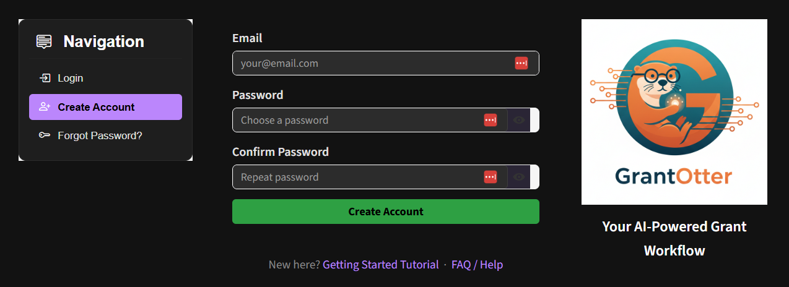
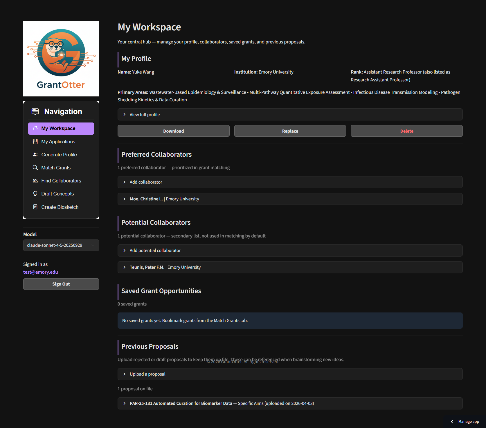
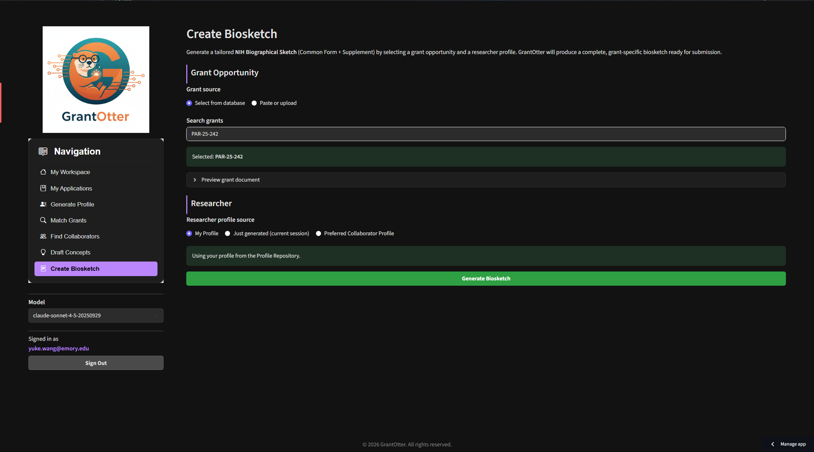

A step-by-step walkthrough of every feature — from building your researcher profile to managing a full grant application in one place.
GrantOtter is a web app — no installation needed. Open it at grantotter.streamlit.app in any browser. You'll be greeted with a sign-in screen before accessing the app.

The GrantOtter sign-up screen — click the Sign Up tab, fill in your email and password, then click Create Account.
My Workspace has five sections:

My Workspace — your central hub for managing your profile, collaborators, saved grants, and previous proposals.
GrantOtter builds this profile by searching the web — pulling from Google Scholar, PubMed, ORCID, ResearchGate, your institution's faculty page, NIH RePORTER, and public grant databases. The result is far more than a list of publications. It includes:
Your name and institution are the only required fields, but filling in additional details significantly improves the profile — especially if your name is common (e.g., "John Smith"). We also strongly recommend completing two fields that directly improve your grant recommendations in the Match Grants tab:
Enter your name and institution, click Generate Profile, and watch your researcher profile stream in live.
The AI-generated profile is a strong first draft, but it's not always perfect. Before using it for grant matching or brainstorming, take a few minutes to review it and correct anything that doesn't look right. Profiles are plain Markdown files — any text editor works. Things to check:
.md file to your computer.GrantOtter compares your profile against hundreds of open funding opportunities — federal grants from NIH, NSF, and DARPA, plus foundation and institutional grants — using a three-stage pipeline:
Instantly removes ineligible grants based on your eligibility type, application deadline, budget range, and funding mechanism.
Scores remaining grants across multiple dimensions — research expertise match, agency preference, career stage fit, and budget alignment — to surface the strongest candidates.
AI reads your profile and each top candidate in depth, ranks them by overall alignment, and writes a plain-language rationale for each recommendation.
You can match grants in two modes:
Set your filters, select your profile, click Find My Grants, and review your ranked funding matches.
GrantOtter gives you three ways to build your team: use the AI chatbot to discover collaborators through your institution network, search the faculty pool directly by name or keyword, or add colleagues you already know.
The chatbot is the most powerful way to find collaborators. Describe the expertise you're looking for in plain language, and the AI searches the institution network, identifies the best-matched faculty, and — crucially — tells you how you're already connected to each person through shared departments, centers, co-authorships, or institutional affiliations. This makes it easy to make a warm introduction rather than a cold outreach.
Prefer to browse directly? The institution profile pool lets you search by faculty name or keyword and read full profiles.
Describe the expertise you need in the chatbot, get matched faculty with connection paths through your institution network, and add them to your team.
Each application in My Applications has five sections:
Create a new application, link the grant, assemble your team, attach documents, and download everything as a ZIP.
Once you've found a promising grant, GrantOtter can generate 2–3 tailored proposal concepts aligned with the funding opportunity's priorities, your team's expertise, and realistic budget constraints — in minutes.
PA-25-131), orSelect a grant, choose your PI and co-investigators, add optional guidance, and click Generate Concepts to get 2–3 tailored proposal ideas.
GrantOtter auto-generates a properly formatted NIH Biographical Sketch (Format Page) from your researcher profile. It pulls your publications, positions, and personal statement — giving you a solid first draft in seconds instead of hours.

Select a target grant and researcher profile, click Generate Biosketch, and get a formatted NIH Biographical Sketch draft in seconds.
GrantOtter generates a set of rich, structured documents — your researcher profile, a grant summary, a brainstorming report, and a biosketch draft. Together, these files form a ready-made knowledge base that you can hand off to any general-purpose AI assistant to continue developing your proposal through natural language conversation.
Instead of starting from a blank page, you're starting with context the AI can actually use — your expertise, your team, the grant's requirements, and a set of targeted concepts. The difference in output quality is significant.
Download the ZIP from My Applications, upload the contents into Claude or ChatGPT, and use them as context to draft Specific Aims, recruitment emails, and more — in seconds.